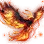
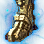
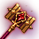
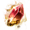
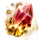

ЭТАП 01≈584 ГС
Сезон и Тувалла V
Создай сезонного персонажа, забери полный готовый комплект V и выпустись.
Как начать →Пошаговая схема развития с нуля: получить экипировку, понять чем её усиливать, дойти до 750 ГС и затем обменять Броню Усыпальницы времён «Рёв» на броню Идана.
Отмечай завершённые этапы. Если термин непонятен, нажми «подробнее» — страница прокрутится к точной инструкции.
Создай сезонного персонажа, забери полный готовый комплект V и выпустись.
Как начать →Пройди курс боя, собери пять Чёрных звёзд V и материалы для трёх видов оружия Вана.
Награды и рецепты →В Велии выполни шесть семейных обменов: ожерелье, пояс, 2 кольца и 2 серьги.
Что принести →Первое сердце поставь в пробуждённое Вана: +3 отображаемой атаки и 2 слота кристаллов.
Где взять сердце →Победи нужных боссов Чёрного храма Тонхэ VIII–IX и забери четыре наградные части.
Боссы и условия →Закрой сюжетные прибавки, «Преграду заражения» и важные главы Игоря Бартелли.
Что даёт характеристики →Гарантированно проведи два приоритетных аксессуара от V до VIII специальными камнями.
Порядок усиления →Второе сердце поставь в основное Вана и получи ещё +3 отображаемой атаки.
Проверить условия →Клавиша / открывает окно усиления. Выбери предмет — игра покажет подходящий материал, шанс, последствия неудачи и возможность защиты.
Материал: Чёрный камень Истока — 1 за попытку.
При неудаче теряется 20 максимальной прочности. Для ремонта нужны Обрывки воспоминаний.
0 → IX: Эссенция рассвета. IX → X: Чёрный камень рассвета.
Без защиты неудача понижает уровень, но предмет не уничтожается.
Материал: Безупречный чёрный камень хаоса.
На ключевых переходах Первородный кристалл защищает от понижения уровня.
Материал: Чёрный камень Идана — 1 за попытку.
Он нагревается из Фрагмента Идана, 3 Заострённых фрагментов и 20 Камней Кафраса.
Не покупай экипировку между этими этапами: игра уже выдаёт рабочий комплект и следующую цепочку развития.
Маршрут даёт пять Чёрных звёзд V. Распредели их до открытия сундуков: не бери больше двух оружий одного типа.

Чёрный камень Истока ×1 на каждую попытку.
Изготовление через Нагрев (L): Кристалл Начала ×1 + Заострённый фрагмент чёрного кристалла ×2 + Камень Кафраса ×10. Камень и Кристалл Начала продаются на аукционе.
Максимальная прочность уменьшается на 20. Восстанови её у кузнеца Обрывками воспоминаний. Перед дорогой попыткой проверь количество Камней Крон и прогноз прямо в окне усиления.
После поступления в Академию отправляйся к алхимику Аллустину в Велии. Каждый обмен выполняется один раз на семью.
Главный стартовый источник — аккаунтные награды курса боя Академии. Недостающее можно купить на Центральном аукционе.
Обмен монет/печатей Академии, сбор и Центральный аукцион. Не путай Заострённые фрагменты с Твёрдыми.
Камни из дневника Эммы гарантируют V → VI → VII → VIII для двух выбранных аксессуаров. Обычно приоритет получают ожерелье и пояс либо слоты ближайшего порога атаки.
При обычной неудаче предмет не исчезает, но уровень может понизиться и падает максимальная прочность. Камни Крон защищают уровень; прочность чинится Обрывками воспоминаний.
Новый путь выдаёт каждую часть напрямую. Для него не требуется сначала делать четыре части босса V с уровнем Кафраса 10.

Выбери часть в окне / → Усиление. Основной материал — Безупречный чёрный камень хаоса. Перед нажатием проверь шанс, расход Кронов, понижение уровня и максимальную прочность.
Для Жажда → Искажение, Искажение → Молчание и Молчание → Рёв существуют соответствующие Первородные кристаллы. Они защищают уровень при неудаче; сама неудача всё равно учитывается Наковальней древних.
После бесплатной экипировки закрываются постоянные характеристики семьи и гарантированно усиливаются два главных аксессуара.



Это не обязательный чек-лист на один день. Выбирай следующий этап только после полного завершения предыдущего.
Идан не выпадает готовым из Чёрного храма. Это обмен соответствующей части Брони Усыпальницы времён уровня «Рёв» или выше вместе с Фрагментом Идана.
Чёрный камень Идана ×1 на попытку.
Нагрев (L): Фрагмент Идана ×1 + Заострённый фрагмент чёрного кристалла ×3 + Камень Кафраса ×20.
Усиливай одну часть до выбранной ступени, затем переходи к следующей. Перед каждой попыткой в окне усиления проверь шанс, Кроны, потерю прочности, понижение и заполнение Эссенции Агриса.
Схема собрана по русскоязычным материалам Pearl Abyss. Числа экипировки — ориентиры: итог может отличаться из-за уже закрытых семейных характеристик.